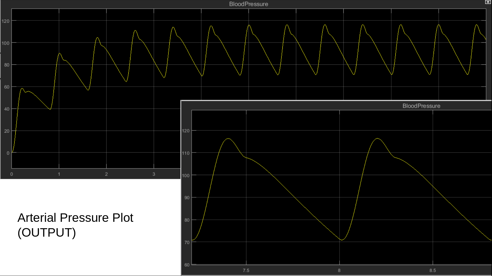
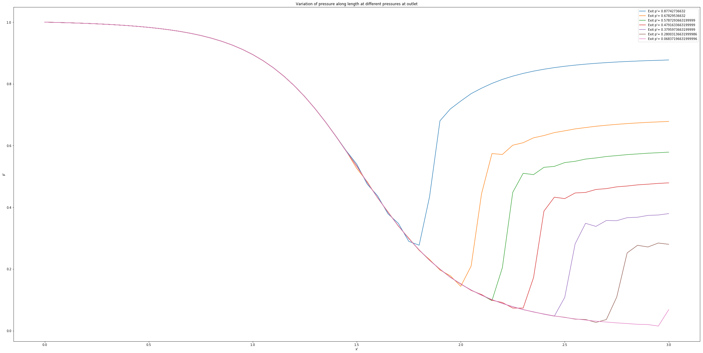
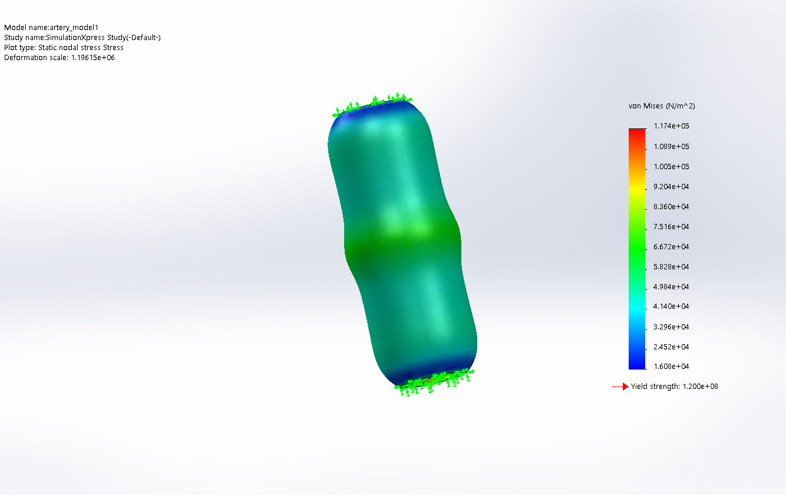
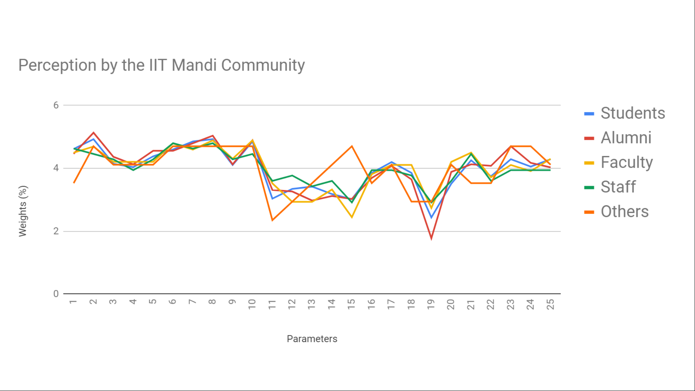
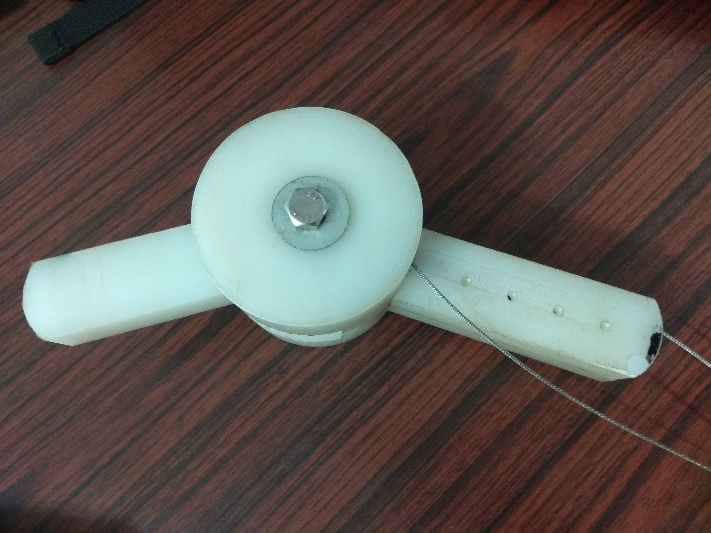
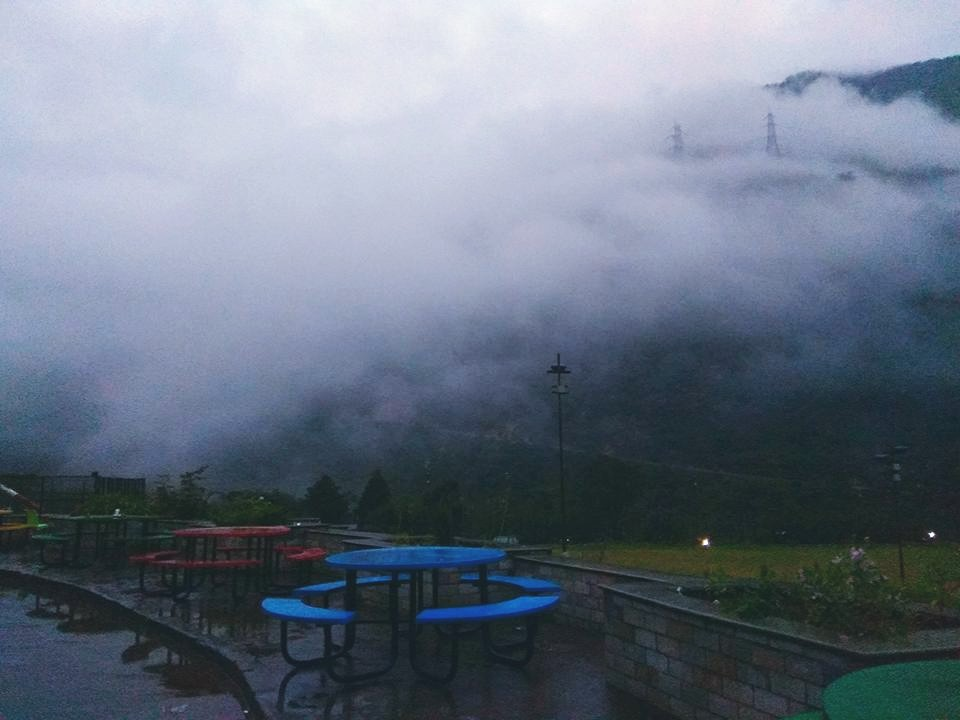
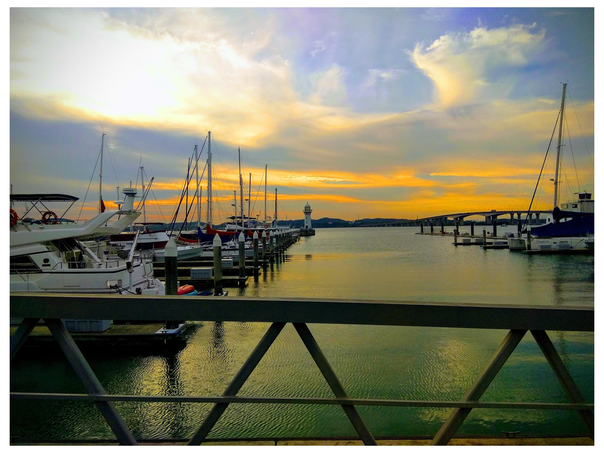

Experience in labs and industry beyond my college
|
Research Assistant (Intern), Nanyang Technological University, Singapore
(June-July, 2019)
Guide: Assoc.Prof. Yeo Joon Hock
I have worked as a research intern for 7 weeks during the summer, 2019 in Nanyang Technological University in Singapore. I was selected through the NTU-India connect programme. While working under the guidance of Prof. Yeo, I got the exposure of cardiovascular implants and their design and testing techniques. My main objective was to design a simulator for the calf muscle pump. I also designed the different parts of a mock circulatory loop (MCL) to test artificial valves.
Engineering Intern, Tata Boeing Aerospace Limited, Hyderabad, India
(December, 2018-February, 2019)
During this 8-weeks long internship at TBAL, I got the experience of the different types of works and procedures in a manufacturing industry. The TBAL produces fuselage for the Apache AH-64 helicopters. I was working in the tooling department where my objective was to understand the working mechanism of the pneumatic drilling/milling machines and suggest improvements in design to satisfy the desired characteristics. I also worked with the quality department where I was a part of the team performing the First Article Inspection (FAI).
Summer Research Fellow, Indian Academy of Sciences
(June-August, 2018)
Guide: Prof. Subhasis Bhaumik
This was my first experience of working in a lab outside my college. I was selected under the summer research fellowship programme of Indian Academy of Sciences . I got the opportunity to work under the mentorship of Prof. Subhasis Bhaumik at the mechatronics lab in IIEST, West Bengal. I worked on the design of an exoskeleton for the rehabilitation of the stroke survivors. (Check here! )
|
Research & Projects
|
Some of the projects that I have completed are mentioned below:
|

Physical and Mathematical Modelling of a Mock Circulatory Loop
[Ongoing Project]
iNaCoMM, 2019 (Poster Presentation of Partial Work)
Neelotpal Dutta,
Garvit Mathur,
Dr. Mohammad Talha
Prepare mathematical models of MCL. Build a physical model and compare the results.
|
|

Numerical Simulation of Flow in a Converging-Diverging Nozzle to Observe the Shock Formation
Solution of compressible flow inside a CD nozzle with shock formation. Implementation with Mac-Cormack scheme in Python.
|

Analysis of the formation of an aneurysm in arteries through finite element modeling using hyper-elastic model
NCAME, 2019
Neelotpal Dutta,
Garvit Mathur,
Dr. Mohammad Talha
We present the effect of different blood pressures in the deformation of the weakened arterial wall and also compare it with a normal artery.
[NOTE: The link contains the preliminary version of the report. The final document will be shared once it is published.]
|
|
Finite Element Analysis of stress in hip joint
Used ANSYS APDL to model and analyse the stress distribution in a 2D
model of human hip joint.
|

Assessing the ‘Smart Village Potential’ of Villages in Mandi District
ISTP,IIT Mandi, 2019
Neelotpal Dutta,
Anand Ramrakhyani, Naman Chaudhary, Lokesh Kumar, Gagandeep Tomar, Aditya Singh,
Dr. Kaustav Sarkar, Prof. S.C. Jain
The Project ‘Smart Village’ is aimed at conducting a study which would enable the administrators to quantify the ‘Smartness Potential’ of the villages of Himachal Pradesh.
|

Design of Upper Arm Exoskeleton
SRFP, Indian Academy of Sciences, 2018
Neelotpal Dutta,
Prof. Subhasis Bhaumik
The objective of the project is to develop the design of an exoskeleton for the upper limb rehabilitation.
|
Design of Lower Limb Exoskeleton
DP, IIT Mandi, 2018
Mentor:Dr. Arpan Gupta
The objective of the project is to develop a lower limb exoskeleton to augment load carrying capacity. Here, we use soft pneumatic actuators
|
Program for Translation from DNA sequence to protein sequence
IC-150P, IIT Mandi, 2016
This project was done during my first semester at IIT Mandi as a part of the course IC-150P. This program translates DNA sequences present in an input file to their corresponding protein sequences.
|
Page is still under construction. More projects and details to be added soon!!
Random Clicks
|

South Campus, IIT Mandi, India
|
|
|

Johor Straits Lighthouse, Singapore
|
Tools
|
Matlab functions to solve non-linear system of equations
[ Download | Contribute]
|
|
Matlab functions for robot dynamics
Based on the text: Lynch, K.M. and Park, F.C., 2017. Modern Robotics. Cambridge University Press.
[Download | Contribute]
|
|
{kind=link}